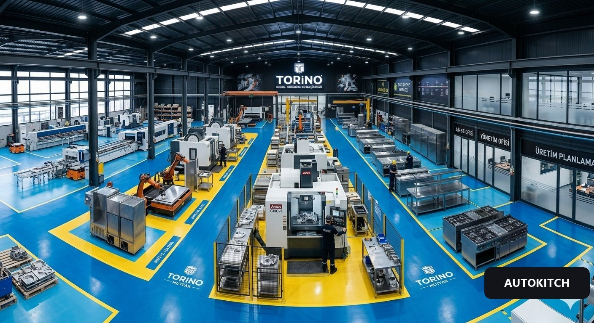
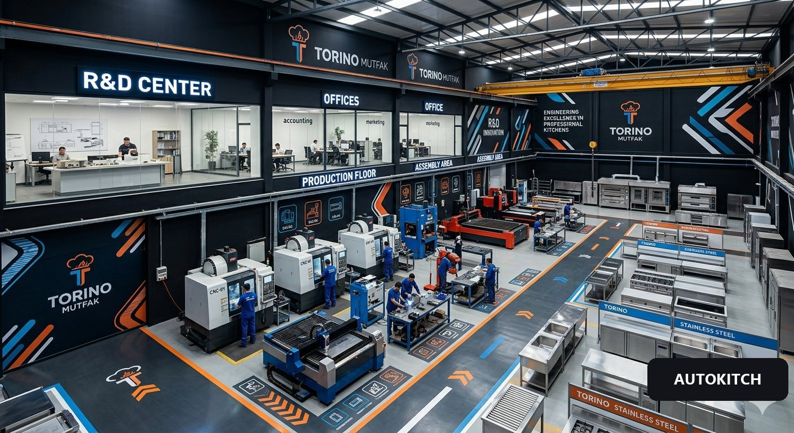

Modüller, pizza hattı, maliyet ve pazar — ana sunum.
Vizyon: siparişten üretime uçtan uca insansız işletme.

Klasik ekipman üretim tesisi ve yatırım planı.

Detaylı fizibilite ve yatırım çalışması — rakamlarla.